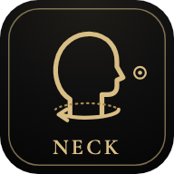
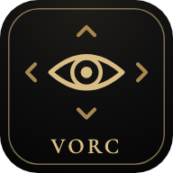
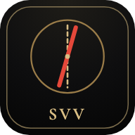

01 · NECK
頸部の固有受容感覚テスト（首の傾きチェック付き）
目を閉じたまま、頭を真ん中や覚えた点へ戻せるかを測ります。ふだんの首の傾きもチェックできます。
カメラを使います
02 · VORC
VORC トレーニング
画面を見つめたまま、頭とスマホをいっしょに動かします。顔がカメラの真ん中からずれた量を VORC のエラーとして測り、練習します。
カメラを使います
03 · SVV
SVV テスト
画面の赤い線を、スマホを傾けて「まっすぐ縦」「まっすぐ横」に合わせるチェックです（SVV・SVH＝自覚的視性垂直位・水平位）。
スマホの傾きで測ります